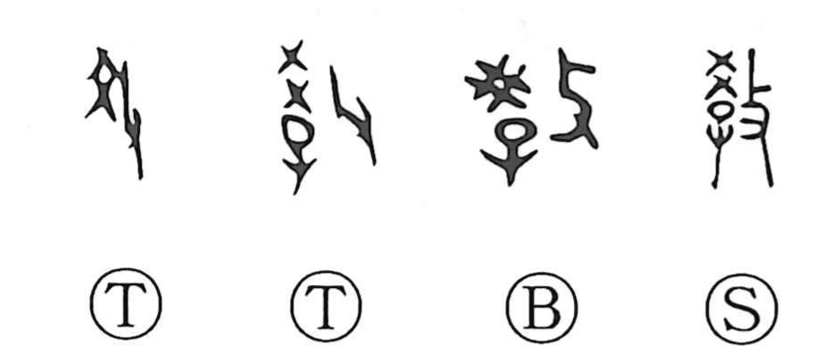

教

Kun: oshieru, osowaru | On: kyou
to teach ・ instruction ・ education
Explanation
教 brings together 爻, 子, and 攴. 爻 represents the crossed roof timbers of a building used for instruction. 子 is a young learner, and 攴 is a hand holding the rod or whip of instructional authority. The child remains part of the scene: an elder urges the learner on within the school.
These buildings were places where the young, especially children of noble families, learned inherited traditions and ceremonial practice from their elders. The roof with its projecting crossed timbers marked a setting close to a sanctuary. 爻 with 子 forms an early graph for learning; adding 攴 gives the activity of teaching and disciplining the learner.
From this scene, 教 means to teach, train, or admonish, and also the teaching that is passed on.